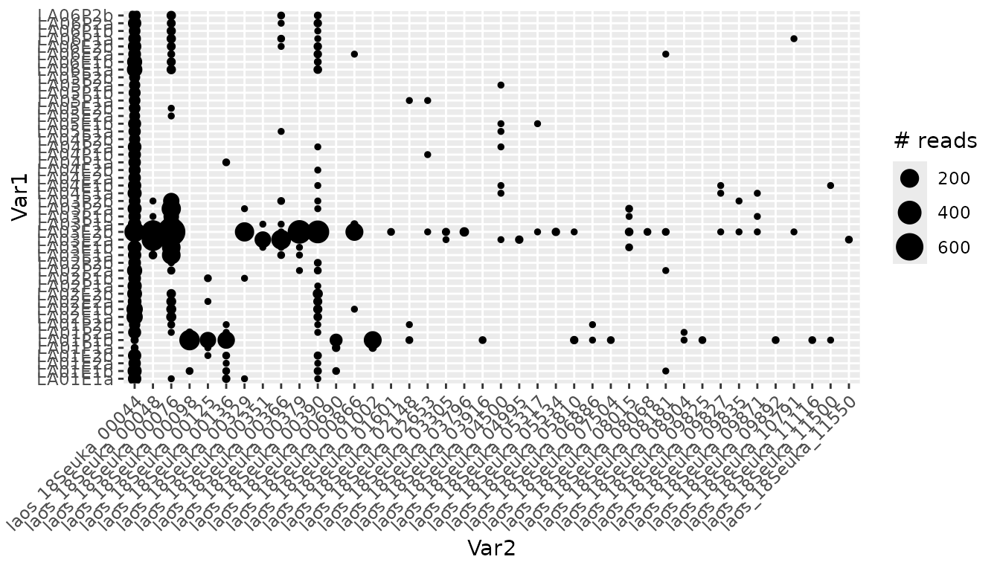
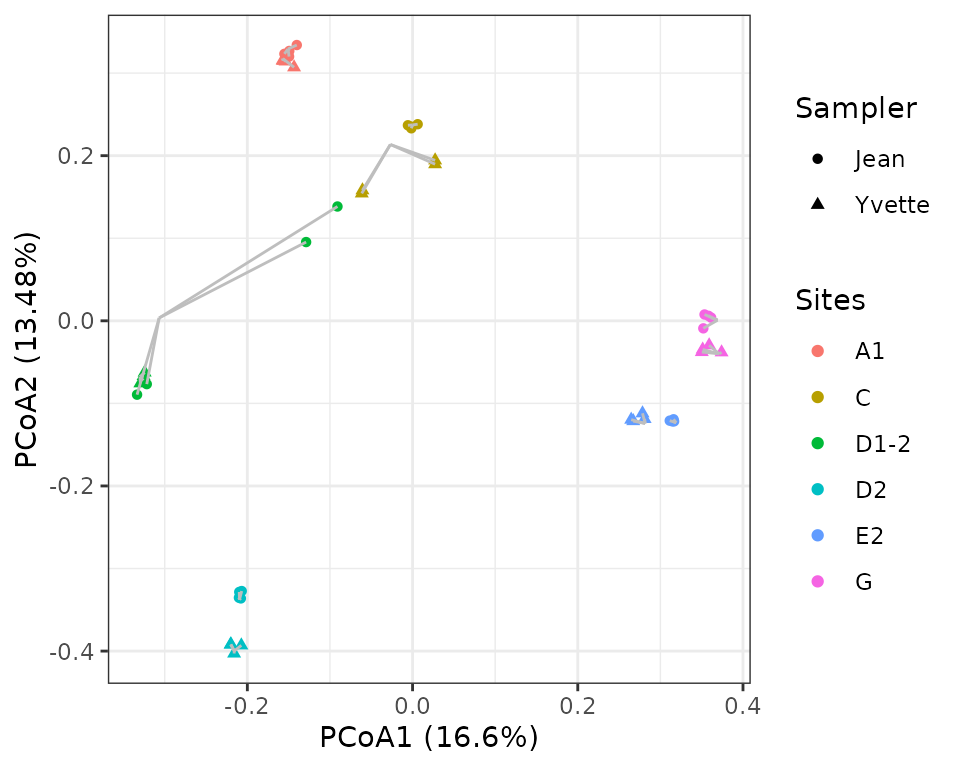

The karst_euk dataset: sampler effect and technical reproducibility
2025-07-31
Source:vignettes/metabaRF-vignette_karst.Rmd
metabaRF-vignette_karst.RmdIntroduction
What if the individual collecting the samples affects DNA
metabarcoding results? What is the extent of technical variability in
DNA metabarcoding experiments? To further illustrate how one can use
metabaR to manipulate DNA metabarcoding data, we will
address these questions with a new dataset, available in the
metabaR companion data repository: https://github.com/metabaRfactory/metabaR_external_data.
The karst_euk dataset
The karst_euk dataset is an object of class
metabarlist. The data were obtained from an environmental
DNA (eDNA) metabarcoding experiment aiming to assess the turnover of
soil eukaryotes in karsts ecosystems, often referred to as “terrestrial
islands”. In these ecosystems, dispersal is strongly limited by the
unique topology of the area, and genetic/ecological drifts are expected
to be important processes locally.
Sampling was conducted across several kast mountains in Laos, as
shown in the figure below. At each sample site, two composite soil
samples were taken by two different samplers, one by Jean and one by
Yvette. These composite samples are a mix of soil cores collected along
a transect, as indicated in the figure. Each of these composite soils
was then subjected to DNA extraction in duplicate, using an
extracellular DNA extraction protocol (Taberlet
et al. 2018). On each DNA extract, the v7 region of the 18S rRNA
gene was then amplified by PCR in duplicates following previously
described protocols (Zinger et al. 2019),
using the Euka02 primer pair (Taberlet et al.
2018), and sequenced on an HiSeq Illumina platform with the
paired-end technology. The retrieved data were then processed using the
OBITools (Boyer et al. 2016) package,
including denoising using the obiclean command. Each entry
in this table is the equivalent of an ASV (amplicon sequence variant) or
the representative sequence of a MOTU.

Given this setup, one expects strong differences in community composition across sites, caused by dispersal limitation, and - hopefully - minimal technical variation caused either by the extraction, PCR, and sampler.
Data import
The dataset can be imported in R as follows
dir <- tempdir()
url <- "https://raw.githubusercontent.com/metabaRfactory/metabaR_external_data/master/"
karst_euk_file <- "karst_euk.rds"
karst_euk_url = paste(url, karst_euk_file, sep="")
karst_euk_path <- file.path(dir, karst_euk_file)
download.file(karst_euk_url, karst_euk_path)
karst_euk <- readRDS(karst_euk_path)One can then use metabaR to display the summary
statistics of the karst_euk dataset
library(metabaR)
summary_metabarlist(karst_euk)
#> $dataset_dimension
#> n_row n_col
#> reads 48 7870
#> motus 7870 23
#> pcrs 48 4
#> samples 12 5
#>
#> $dataset_statistics
#> nb_reads nb_motus avg_reads sd_reads avg_motus sd_motus
#> pcrs 224627 7870 4679.729 1340.161 933.1667 312.2533
#> samples 224627 7870 4679.729 1340.161 933.1667 312.2533The karst_euk dataset consists of 48 PCR products
corresponding to 12 composite, biological samples in total. It does not
contain experimental negative or positive controls, which is why the
summary statistics are the same between pcrs and
samples.
colnames(karst_euk$pcrs)
#> [1] "sample_id" "extraction_id" "type" "control_type"In karst_euk, the columns of the pcrs table correspond
to:
-
"sample_id": a vector indicating the biological sample origin of each pcr (e.g. the sample name), here a composite sample collected by a given sampler.
-
"extraction_id": a vector indicating the extraction origin of each pcr (duplicate extraction for each sample).
-
"type": a vector containing only the value “sample”, as no controls are included in this experiment.
-
"control_type": a vector containing only the valueNA, as no controls are included in this experiment.
colnames(karst_euk$samples)
#> [1] "Site" "avg_N" "avg_E" "avg_alt" "sampler"The columns of the samples correspond to: -
"Site": the sampling site.
- "avg_N": the latitude (decimal degrees) averaged across
each sampling point of the same site.
- "avg_E": the longitude (decimal degrees), averaged as for
latitudes. - "avg_alt": the elevation (m.a.s.l.), averaged
as above.
- "sampler": the name of the sampler.
Diagnostic plots
Basic visualisation
As the dataset contains neither negative / positive controls, nor
information on the pcr design (i.e. PCR plates and wells), several
functions of the metabaR package cannot be used.
Nevertheless, metabaR can still be used to handle this
multi-layer data for more basic visualisation purposes. For example, the
distribution of sequencing depth and number of MOTUs per samples can be
visualized as follows
# Compute the number of reads per pcr
karst_euk$pcrs$nb_reads <- rowSums(karst_euk$reads)
# Compute the number of motus per pcr
karst_euk$pcrs$nb_motus <- rowSums(karst_euk$reads>0)
# load ggplot2
library(ggplot2)
# Plot the distribution of #reads
a <-
ggplot(karst_euk$pcrs, aes(x=nb_reads)) +
geom_histogram(color="grey", fill="white", bins=20) +
theme_bw() + expand_limits(x=0) +
theme(panel.grid = element_blank()) +
labs(x="# reads", y="# PCRs")
# Plot the distribution of #motus
b <-
ggplot(karst_euk$pcrs, aes(x=nb_motus)) +
geom_histogram(color="grey", fill="white", bins=20) +
theme_bw() +
theme(panel.grid = element_blank()) +
labs(x="# MOTUs", y="# PCRs")
# Combine plots into one
library(cowplot)
ggdraw() +
draw_plot(a, x=0, y=0, width = 0.5) +
draw_plot(b, x=0.5, y=0, width = 0.5)
These very basics plots already suggest that 3 pcrs have very low diversity. They appear to behave in the same way as negative controls, potentially amplifying only contaminants and few sample site derived sequences.
Sequencing depth and coverage
Let’s construct the rarefaction curves with the
hill_rarefaction function so as to obtain an estimate of
and
.
nboot is low in the example below to limit the computing
time.
#build rarefaction curves
karst_euk.raref <- hill_rarefaction(karst_euk, nboot = 20, nsteps = 10)
#draw by coloring the curves by sampler
# Define a vector containing the Material info for each pcrs
sampler <- karst_euk$samples$sampler[match(karst_euk$pcrs$sample_id,
rownames(karst_euk$samples))]
# Use of gghill_rarefaction requires a vector with named pcrs
sampler <- setNames(sampler,rownames(karst_euk$pcrs))
# Plot
p <- gghill_rarefaction(karst_euk.raref, group=sampler)
p + scale_fill_manual(values = c("orange","chartreuse")) +
scale_color_manual(values = c("orange","chartreuse")) +
labs(color="Sampler")
At a first glance, it seems that Jean’s samples are more diverse in abundant/intermediate sequences than Yvette’s ones.
Flagging spurious MOTUs
Potential contaminants
This dataset does not include negative controls to enable the
detection of potential contaminants objectively. Still, we identified
above some pcrs with very low diversity that may correspond to
pcrs reactions where addition of DNA template somehow failed,
and where reagents contaminants were amplified. Let’s see if these have
a particular composition when compared with the other samples. This can
be done by hijacking the contaslayer function as
follows:
# set low-diversity pcrs as controls of e.g. pcrs
karst_euk$pcrs$control_type[which(karst_euk$pcrs$nb_motus<100)] <- "pcr"
karst_euk$pcrs$type[which(karst_euk$pcrs$nb_motus<100)] <- "control"
# run contaslayer
karst_euk <- contaslayer(karst_euk,
control_types = "pcr",
output_col = "not_a_pcr_conta")And then display some basic information on these potential contaminating sequences.
# print taxonomy of MOTUs most abundant in low-diversity samples
library(kableExtra)
dt <- karst_euk$motus[!karst_euk$motus$not_a_pcr_conta,
c("count","best_identity",
"scientific_name", "sequence")]
dt$best_identity <- round(dt$best_identity)
colnames(dt) <- c("total # reads", "similarity to ref DB", "taxon name", "sequence")
kable(dt[order(dt[,1], decreasing = TRUE)[1:10],], row.names=T) %>%
kable_styling(bootstrap_options= c("striped", "hover", "condensed"),
font_size = 8, full_width = F)| total # reads | similarity to ref DB | taxon name | sequence | |
|---|---|---|---|---|
| laos_18Seuka_00044 | 2752 | 1 | Sordariomycetes | ctcaaacttccatccgcttgagcggatagtccctctaagaagccagcgtactgccaaagcaatacgggctatttagcaggttaaggtctcgttcgttat |
| laos_18Seuka_00076 | 1768 | 1 | Liliopsida | ctcaaacttccgtggcctaaacggccatagtccctctaagaagctagctgcggagggatggctccgcatagctagttagcaggctgaggtctcgttcgttaa |
| laos_18Seuka_00048 | 738 | 1 | Pooideae | ctcaaacttccgtcgcctaaacggcgatagtccctctaagaagctagctgcggagggatggctccgcatagctagttagcaggctgaggtctcgttcgttaa |
| laos_18Seuka_00390 | 437 | 1 | Euclea crispa subsp. linearis | ctcaaacttccgtggcctgaaaggccatagtccctctaagaagctagctgcggagggtcgcctccgcatagctagttagcaggctgaggtctcgttcgttaa |
| laos_18Seuka_00379 | 400 | 1 | Brassicaceae | ctcaaacttccttggcctaaacggccatagtccctctaagaagccggccgtgaagggatgcctccacgtagctagttagcaggctgaggtctcgttcgttaa |
| laos_18Seuka_00098 | 266 | 1 | Euplotida | ctcaaacttccttgtggttgcacacaaagtccctctaagaagtacataccggaaaaccggctgactatttagcaggctaaggtctcgttcgttaa |
| laos_18Seuka_00366 | 248 | 1 | Basidiomycota | ctcaaacttccgtcagctaaacgctgacagtccctctaagaagccagcgaccagcaaaagccggccgggctatttagcaggttaaggtctcgttcgttat |
| laos_18Seuka_00329 | 220 | 1 | Diplosoma gumavirens | ctcaaacttccattggctggaagccaatagtccctctaagaagccagccaccaaccatagtcgatggggctatttagcaggttaaggtctcgttcgttat |
| laos_18Seuka_00866 | 176 | 1 | Fungi | ctcaaacttccttcggcttgagccgaaagtccctctaagaagccagcgtactgccaaagcaatacgggctatttagcaggttaaggtctcgttcgttat |
| laos_18Seuka_01002 | 174 | 1 | Vorticella campanula | ctcaaacttccatgtgattacatcacatagtccctctaagaagtgattcaaatttgaaataagaacactagttagcaggttaaggtctcgttcgttaa |
From the taxonomy of these potential contaminant sequences, it is difficult to say whether these sequences are true contaminants. One way to further investigate this is to see how these sequences are distributed across pcrs.
library(reshape2)
tmp <- melt(karst_euk$reads[,!karst_euk$motus$not_a_pcr_conta])
ggplot(tmp, aes(x=Var2, y=Var1, size=ifelse(value==0, NA, value))) +
geom_point() + labs(size = "# reads") +
theme(axis.text.x = element_text(angle=45, hjust = 1))
The most abundant contaminant identified in the table above is present in all samples and is, therefore, most likely a contaminant. In addition, other potential contaminant sequences are present in 7-8 successive samples, which are likely in the same column in the PCR plate. These features strongly suggest that these sequences are indeed artefactual and should be excluded from the dataset.
Flagging spurious MOTUs and non-target MOTUs
Non-target MOTUs cannot be detected in this particular dataset, because the taxonomic assignments have been made using a reference database that only contains eukaryotic sequences.
One can, however, still identify MOTUs whose sequence is too dissimilar from references, by plotting the distribution of MOTU similarity scores, weighted and unweighted by their relative abundance.
# Plot the unweighted distribution of MOTUs similarity scores
a <-
ggplot(karst_euk$motus, aes(x=best_identity)) +
geom_histogram(color="grey", fill="white", bins=20) +
geom_vline(xintercept = 0.8, col="orange", lty=2) +
theme_bw() +
theme(panel.grid = element_blank()) +
labs(x="% similarity against best match", y="# MOTUs")
# Same for the weighted distribution
b <-
ggplot(karst_euk$motus,
aes(x=best_identity, y = ..count.., weight = count)) +
geom_histogram(color="grey", fill="white", bins=20) +
geom_vline(xintercept = 0.8, col="orange", lty=2) +
theme_bw() +
theme(panel.grid = element_blank()) +
labs(x="% similarity against best match", y="# Reads")
# Combine plots into one
library(cowplot)
ggdraw() +
draw_plot(a, x=0, y=0, width = 0.5) +
draw_plot(b, x=0.5, y=0, width = 0.5)
As in the soil_euk dataset, we may consider any MOTU as
degraded sequences if its sequence similarity is < 80% against its
best match in the reference database.
# Flag not degraded (TRUE) vs. potentially degraded sequences (FALSE)
karst_euk$motus$not_degraded <-
ifelse(karst_euk$motus$best_identity < 0.8, F, T)
# Proportion of each of these over total number of MOTUs
table(karst_euk$motus$not_degraded) / nrow(karst_euk$motus)
#>
#> FALSE TRUE
#> 0.02210928 0.97789072
# Intersection with other flags
table(karst_euk$motus$not_a_pcr_conta,
karst_euk$motus$not_degraded)
#>
#> FALSE TRUE
#> FALSE 0 40
#> TRUE 174 7656In this case, no intersection is found between degraded MOTUs and potential contaminants.
Assessing signal reproducibility
Using the characteristics of the karst_euk dataset, one
can assess the signal reproducibility at different levels:
- the DNA extract level
- the composite sample level
- the site level.
# DNA extraction
comp1 = pcr_within_between(karst_euk, replicates = karst_euk$pcrs$extraction_id)
a <-
check_pcr_thresh(comp1) +
scale_color_manual(labels = c("between DNA extracts", "within DNA extracts"),
values = c("coral2", "cyan3"))
# composite sample
comp2 = pcr_within_between(karst_euk, replicates = karst_euk$pcrs$sample_id)
b <-
check_pcr_thresh(comp2) +
scale_color_manual(labels = c("between samples", "within DNA samples"),
values = c("coral2", "cyan3"))
# sampler
karst_euk$pcrs$sampler_id <- karst_euk$samples$sampler[match(karst_euk$pcrs$sample_id,
rownames(karst_euk$samples))]
comp3 = pcr_within_between(karst_euk, replicates = karst_euk$pcrs$sampler_id)
comp3$bar_dist <- rep(comp3$bar_dist, 2) # trick to plot a density from 1 value
c <-
check_pcr_thresh(comp3) +
scale_color_manual(labels = c("between samplers", "within DNA samplers"),
values = c("coral2", "cyan3"))
library(cowplot)
ggdraw() +
draw_plot(a, x=0, y=0.6, height = 0.3) +
draw_plot(b, x=0, y=0.3, height = 0.3) +
draw_plot(c, x=0, y=0, height = 0.3)
These plots suggest that the PCR and extraction reproducibility is high. By contrast, reproducibility per sampler is low, which suggests that the biological differences between samples are stronger than potential effects introduced by the sampler identity.
Let’s verify this with an ordination visualisation by hijacking the
check_pcr_repl function:
# Distinguish between pcrs obtained from the different sample sites
mds = check_pcr_repl(karst_euk,
# display sites with different colors
groups = karst_euk$samples$Site[match(karst_euk$pcrs$sample_id,
rownames(karst_euk$samples))],
# use funcpcr to differentiate samplers instead of good vs. failed pcrs.
funcpcr = karst_euk$pcrs$sampler_id == "Yvette")
mds +
labs(color = "Sites", shape="Sampler") +
scale_shape(labels=c("Jean", "Yvette"))
The variability across sites is hence far larger than between
samplers and technical replicates. But the sampler effect is not
negligible. One can observe, however, some PCR outliers (site D1-2
sampled by Jean, or site C sampled by Yvette) that can be flagged with
the function pcrslayer. We invite readers to refer to the
“Let’s
metabaR” tutorial for further advices on the use of this
function.
Data final cleaning and aggregation
The above represents a succinct description of the data cleaning
process for the karst_euk dataset. Note that not all steps
are shown here, and we refer the user to the “Let’s
metabaR” tutorial, based on the soil_euk dataset for a
complete process of signal flagging and cleaning, including the last
steps of the process, i.e. removal of flagged MOTUs/pcrs and data
aggregation.